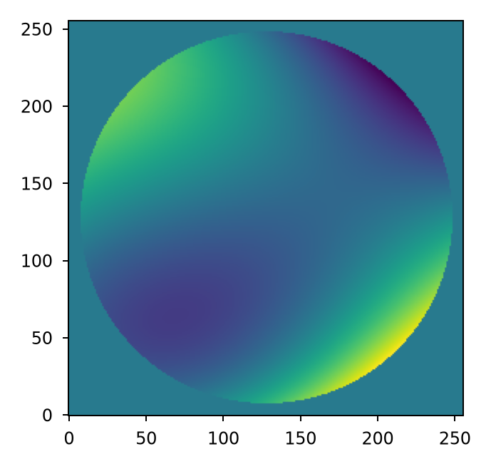
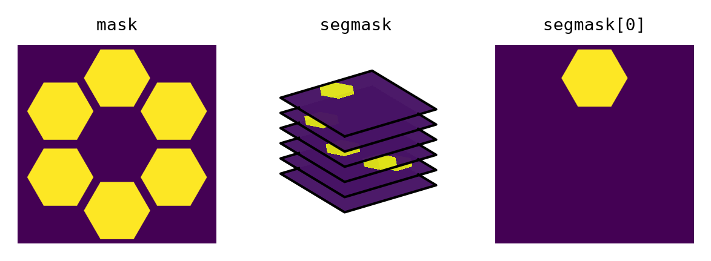

Describing optical systems#
It is common in physical optics modeling to represent an optical system in its “unfolded” state where all optical elements are arranged along a straight line (the optical axis). This approach assumes the following:
The beam is paraxial
Powered mirrors are represented as equivalent ideal thin lenses
The beam does not change dimensions across a lens
A lens has no thickness so all phase changes occur in a plane
Lentil uses Plane objects to represent discretely sampled planes in an optical system
and Wavefront objects to represent discretely sampled electromagnetic fields as they
propagate through an optical system.
How a plane affects a wavefront#
An optical plane generally has some effect on a wavefront as it propagates
through the plane. A plane may change a propagating wavefront’s amplitude, phase,
and/or physical extent. This Plane-Wavefront interaction is performed by the
plane’s multiply() method. A Plane and Wavefront can be
multiplied in two ways:
By calling
Plane.multiply()directly:>>> w1 = plane.multiply(w0)
By using the built-in multiplication operator (which in turn calls
Plane.multiply()):>>> w1 = plane * w0
The multiply() method constructs a complex phasor from the plane’s
amplitude and phase attributes and the
Wavefront wavelength. The plane complex phasor is then multiplied element-wise with
the wavefront’s complex data array:
The plane’s multiply() method also accepts an inplace argument
that governs whether the multiplication operation is performed on the wavefront in-place
or using a copy:
>>> w1 = plane.multiply(w0, inplace=True)
>>> w1 is w0
True
The in-place multiplication operator can also be used:
>>> w *= plane
Planes in a simple optical system#
Most optical systems can be adequately modeled by a single far-field propagation
between a Pupil and image plane. This includes most cameras,
telescopes, and imaging instruments. In these models, all of the optics in a system are
represented by a single Pupil plane:
>>> import matplotlib.pyplot as plt
>>> import lentil
>>> amplitude = lentil.circle(shape=(256, 256), radius=120)
>>> opd = lentil.zernike_compose(mask=amplitude,
... coeffs=[0, 0, 0, 100e-9, 300e-9, 0, -100e-9])
>>> pupil = lentil.Pupil(amplitude=amplitude, phase=opd, focal_length=10,
... pixelscale=1/240)
>>> plt.imshow(pupil.phase, origin='lower')

Segmented optical systems#
Creating a model of a segmented aperture optical system in Lentil doesn’t require any
special treatment. The Plane and Pupil objects work the same with sparse or
segmented amplitude, phase, and mask attributes as with monolithic ones.
That being said, it is advantageous from a performance point of view to supply a
3-dimensional segment mask when specifying a Plane’s mask
attribute rather than a flattened 2-dimensional global mask when working
with a segmented aperture, as depicted below:

This modification is not necessary to achieve accurate propagations, but can greatly improve performance. For additional details, see user_guide.diffraction.segmented.
More complicated optical systems#
More complicated imaging systems may contain multiple pupil and image planes. This
includes systems like spectrometers and coronagraphs. With these systems, the
Pupil, Image, and Detector planes are
still used but much more care needs to be taken to ensure each plane is adequately
sampled to avoid the introduction of numerical artifacts in the diffraction propagation.
If access to an intermediate (non-pupil or image) plane is required or if an imaging system is not operating near focus, the near-field (Fresnel) propagation methods should be used instead.